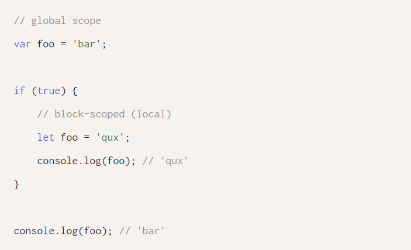
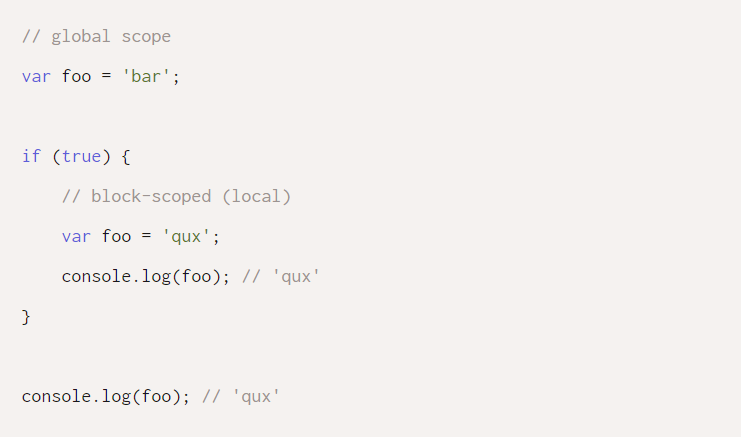
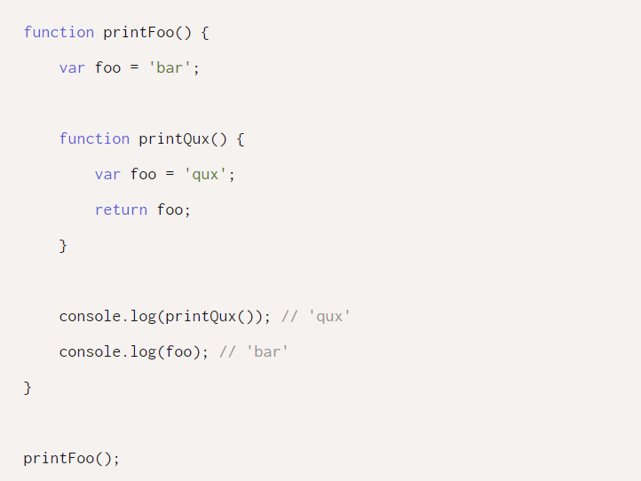
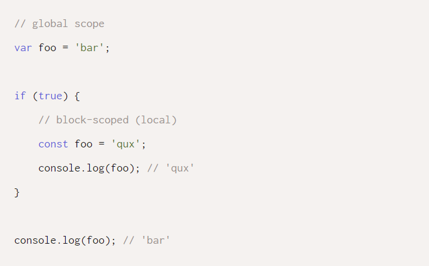
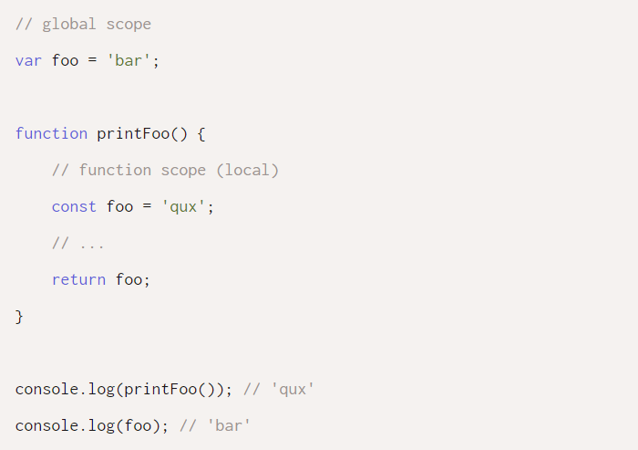
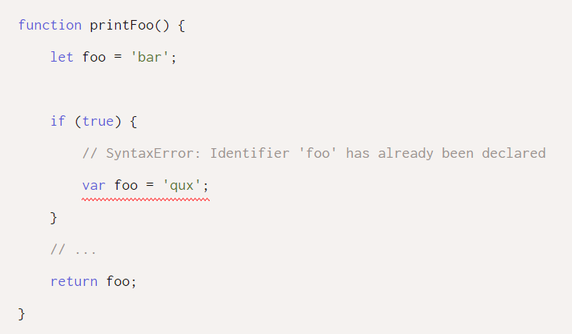
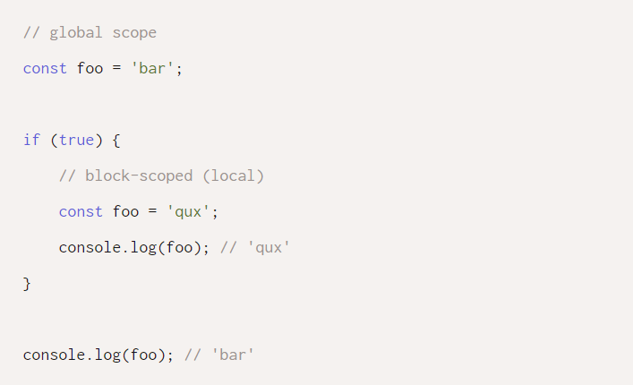
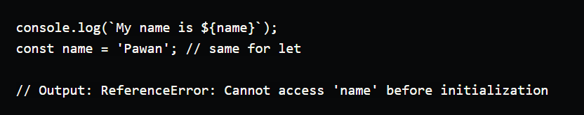
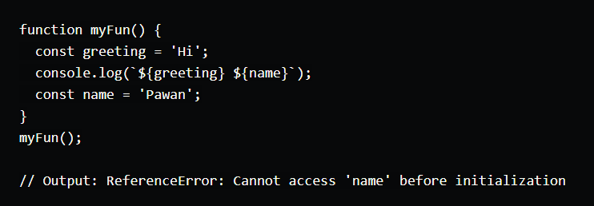
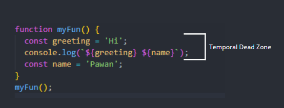

To understand variable shadowing in JavaScript, we must first be aware of the two scopes we can declare variables in:
* Local Scope: Variables declared here are block-scoped or function-scoped;
*Global Scope: It's the outermost scope where any variable that's declared is available
globally.
And, the three ways in which you can declare variables in those two scopes are as follows:
* Using var — creates a function-scoped or globally-scoped variable;
* Using let — creates a block-scoped local variable;
* Using const — creates a block-scoped local constant.
Now that you know the basics, you must remember the following rules that apply to variables depending on the scope they're declared in:
Variables declared asletorconstare block-scoped and they do not overwrite the value of the shadowed variable. 
This isn't true, however, for variables declared withvarsince they are not block-scoped (but rather global and function scoped). Therefore, they would overwrite values in block scope but not in function scope.
Since variables declared asvarare function-scoped, the nested function won't overwrite the one with the same name in the outer scope.
When you use a local scoped variable of the same name, its value takes precedence over the outer scoped one.
Same thing happens in a function scope as you can see in the code below:
In a local scope you cannot shadow anotherletorconst. In that case, you will get an error as shown below:
However, a variable declared withlet,constandvarcan shadow a global-scoped let, const and var variable. For example:
Though hoisting may seem very straightforward, it does have some things to be taken care of:
For let and const, hoisting is not applicable so if we try to execute the following code
So, for let and const declarations, we have something as theTemporal Dead Zonewhich is defined as an area of code in which a variable is defined but cannot be used. This is primarily because the variable has an initial value set as 'uninitialized'. The temporal dead zone lasts from the beginning of the scope to the point where the variable is declared.
Let us see the code snippet below and make it even clearer:
The figure below shows the Temporal Dead Zone for the snippet:
So if we try to access the variable in the Temporal Dead Zone, we getReferenceErrorand this is why using let and const is recommended so as to avoid issues due to hoisting in case ofvar.